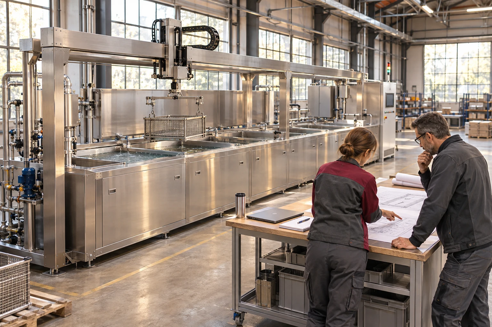

Batch cleaning cells
A dedicated wash station for a defined industrial batch.
Review the familyfrom first brief to handover.
Bring your workpiece, production targets and site constraints. Build an agenda for the decisions your team and an equipment supplier need to make.

Project Partners / Planning at the lineThe project pathway
Choose a project stage and select the items you want the supplier to confirm. You can combine questions from different stages.
Set the production need and identify which questions belong in the first supplier discussion.
Agree what a representative test would prove before choosing settings or discussing acceptance.
Bring the equipment discussion into the space in which the cleaning process will operate.
Clarify who needs which information when the proposed system passes into operation.

A dedicated wash station for a defined industrial batch.
Review the familyA linked route for washing, rinsing and removal of residual liquid.
Review the familyThese illustrative scenarios show what a team might clarify. They do not describe completed customer projects.
A project team is considering a multi-stage route inside an occupied production area.
Read the scenarioA batch-cleaning project needs an agreed transition from trial work into daily operation.
Read the scenarioA first-meeting checklist for procurement, process and site stakeholders.
Access, utilities and handover questions to raise while the layout can still change.
bring the right questions.